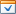
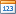
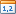

Data Source Browser
The Data Source Browser allows you to navigate through dashboard data sources. It displays the data source structure and allows you to bind dashboard items to the required data source fields using drag-and-drop operations. The Data Source Browser also enables you to manage calculated fields.

The Data Source Browser contains the following elements.
Data Source drop-down list - allows you to select the required data source.
Query/Data Member drop-down list - allows you to select the required query or data member.
The following Command buttons are available.
The
 button groups fields by type.
button groups fields by type.The
 and
and  buttons are used to switch the sort order.
buttons are used to switch the sort order.The
 button is used to refresh the Field List.
button is used to refresh the Field List.Field List displays data source fields. You can drag these fields to the data item placeholders to specify data binding.
The Data Source Browser identifies the following data field types.
| Icon | Description |
|---|---|
|  | Boolean |
 |
Byte |
 |
Date-time |
|   | Numeric |
 |
String |
 |
Calculated field |